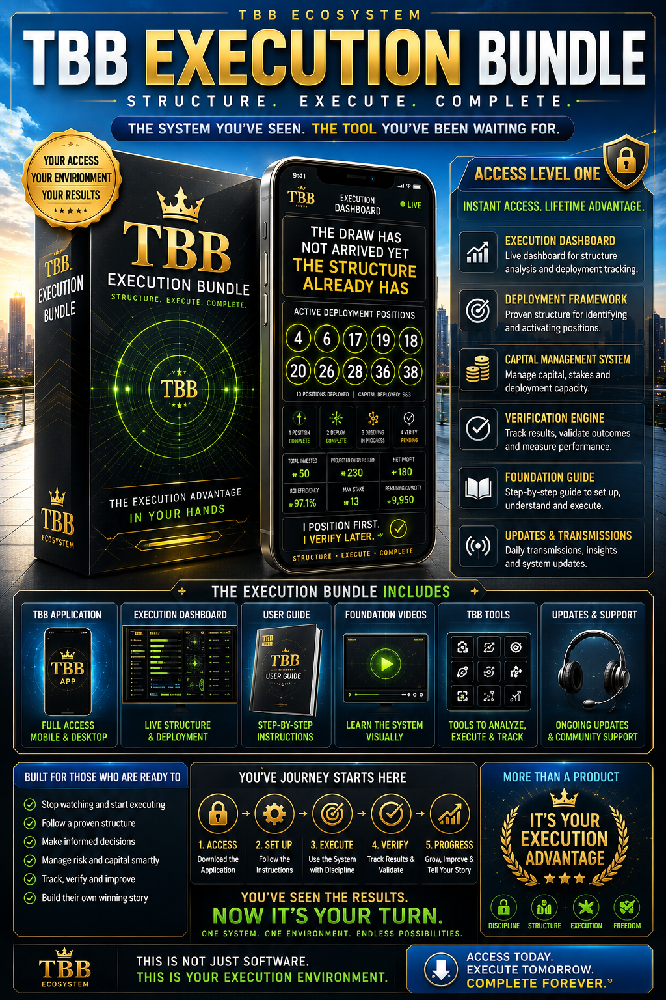

Observation created curiosity. Participation creates understanding.
Observation created curiosity. Participation creates understanding.
✓ TBB Execution Application
✓ Structured Deployment Environment
✓ Progression Management System
✓ Capital Management Framework
✓ Verification Engine
✓ Operational Dashboard
✓ Updates & Transmissions
Most people observe outcomes.
The TBB Framework observes structure.
Access transforms observation into participation.

✓ Application Access
✓ Activation Instructions
✓ Execution Environment
✓ Structured Framework
✓ Deployment Tools
✓ Progression System
✓ Ecosystem Entry
You have seen the dashboards.
You have followed the transmissions.
You have watched the execution.
Now decide whether you will remain an observer or become a participant.
ACCESS THE VAULT